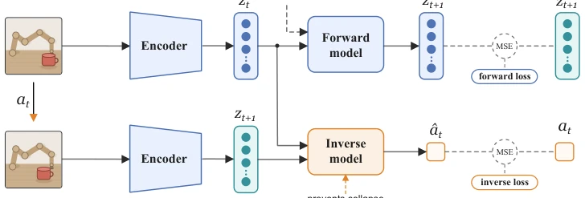
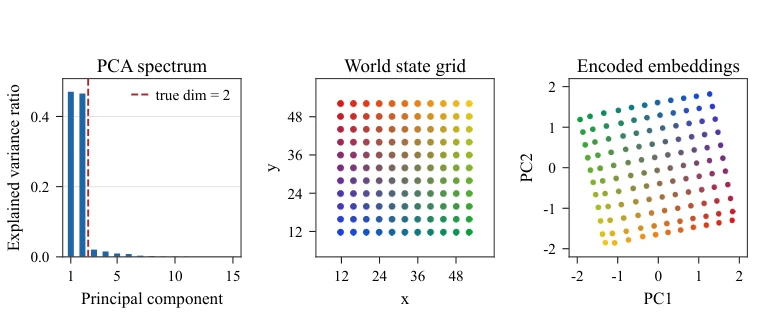
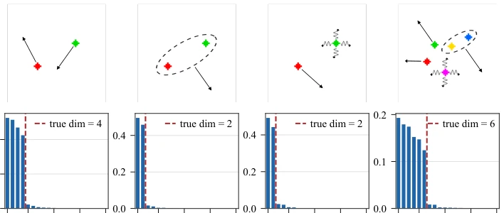
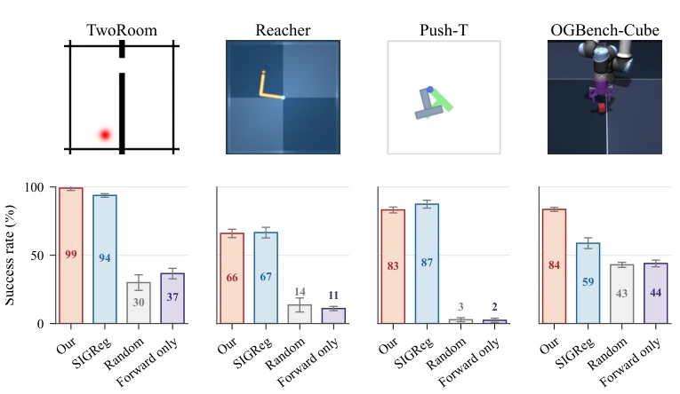
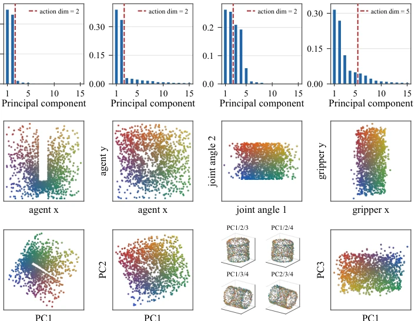
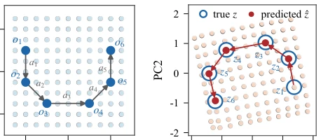
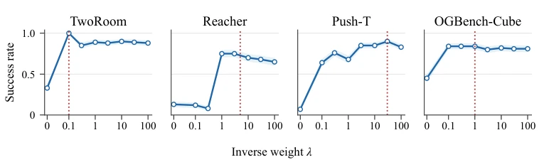
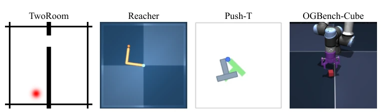
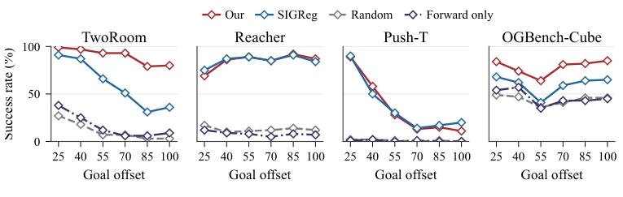
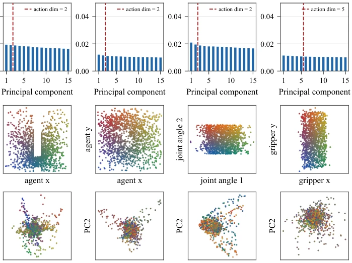

This paper performs a "de-greasing" surgery on JEPA-style World Models. The authors keenly point out that solely pursuing prediction accuracy leads to Representation Collapse, where the model learns to "play dumb" and map everything to constants. SMWM's solution is straightforward and blunt: add an inverse dynamics head, forcing the model to "guess" actions from state changes. This approach both prevents collapse and focuses representations on controllable degrees of freedom, truly a paradigm of "less is more". However, this method may fail in scenarios where "actions are indistinguishable" (e.g., different actions cause the same visual change), and it relies entirely on offline data, lacking robustness in online interaction. Although the authors claim this is a perfect embodiment of "Perception is Action", essentially it still uses task constraints (action prediction) to guide representation learning, belonging to a clever variant of "hanging a sheep's head to sell dog meat". It performs brilliantly on 3D manipulation tasks, but whether it is truly superior to complex regularizations like SIGReg in complex physical interactions requires more long-horizon planning verification.
The core pain point currently faced by JEPA-style World Models (such as V-JEPA 2 [16], LeWorldModel [14]) is representation collapse: to minimize prediction error, encoders tend to map all observations to constants, causing the model to lose predictive value. Existing solutions mostly rely on complex methods: DINO-WM [12] freezes pre-trained encoders, sacrificing the flexibility of end-to-end learning; PLDM [13] introduces multiple regularization terms; SIGReg [14] enforces distribution matching. These methods either increase computational burden or introduce strong prior assumptions. The motivation of this paper stems from the "Perception for Action" theory, believing that representations should serve control. The authors question: can a simple inverse dynamics regularization term alone, both prevent collapse and let representations naturally focus on controllable degrees of freedom, removing irrelevant interference? This directly challenges existing work's dependence on complex architectures or distribution assumptions, attempting to return to the causal essence—if state changes can infer actions, then they must contain control-relevant information.

Figure 1: Method overview. We train an encoder fθ, a forward dynamics model gϕ, and an inverse dynamics model hψ jointly from an offline dataset of transitions (ot, at, ot+1). The encoder maps each observation to a compact embedding, zt = fθ(ot) and zt+1 = fθ(ot+1). The forward model predicts the next embedding from the current embedding and action, ˆzt+1 = gϕ(zt, at), and is supervised by the mean-squared forward loss Lfwd between ˆzt+1 and zt+1. In parallel, the inverse model predicts the executed action from the two embeddings, ˆat = hψ(zt, zt+1), supervised by the mean-squared inverse loss Linv between ˆat and at. Both losses backpropagate into the encoder through the joint objective L = Lfwd + λ Linv. The inverse loss acts as an anti-collapse mechanism: to enable action recovery, fθ m
SMWM adopts an end-to-end training framework, containing three core modules: encoder $f_\theta$, forward dynamics model $g_\phi$, and inverse dynamics model $h_\psi$. The overall process is based on offline trajectory datasets $(o_t, a_t, o_{t+1})$. First, the encoder maps observations $o_t$ and $o_{t+1}$ to compact embeddings $z_t, z_{t+1}$. The forward model $g_\phi$ uses $z_t$ and action $a_t$ to predict the next step embedding $\hat{z}_{t+1}$, calculating forward loss $L_{fwd}$ via Mean Squared Error (MSE). The innovation lies in inverse dynamics regularization: the inverse model $h_\psi$ receives $(z_t, z_{t+1})$ and predicts action $\hat{a}_t$, calculating inverse loss $L_{inv}$. The total loss function is $L = L_{fwd} + \lambda L_{inv}$. The key mechanism is gradient backpropagation: $L_{inv}$ forces the encoder to retain information sufficient to distinguish actions, thereby preventing collapse and filtering uncontrollable interference. This design requires no frozen encoder, no Exponential Moving Average (EMA) or complex distribution regularization, only adjusted via a single hyperparameter $\lambda$. The inverse dynamics head not only serves as a collapse prevention mechanism but also implicitly guides the latent space geometric structure, aligning it with controllable degrees of freedom in the action space, achieving "perception serving action" causal representations.
实验Experiments
实验在Dot World（可控维度验证）及四个真实控制任务（TwoRoom导航、Reacher机械臂、Push-T推物、OGBench-Cube 3D操作）上进行。基线包括SIGReg [14]、Forward-only（无正则）和随机动作。评测指标为规划成功率（Goal-conditioned planning）和物理状态恢复能力（R2）。结果显示，SMWM在2D任务上与SIGReg持平，但在3D操作任务（OGBench-Cube）上显著优于SIGReg（84% vs 59%）。消融实验证明，移除逆动力学正则化会导致规划性能崩塌。PCA分析表明，SMWM的潜空间维度严格匹配可控自由度，且能自动过滤随机干扰（Distractor），而SIGReg的潜空间结构较松散。此外，SMWM在Reacher任务中成功编码了周期性角度（圆柱结构），证明了其对复杂几何的捕捉能力。
Experiments are conducted on Dot World (controllable dimension verification) and four real control tasks (TwoRoom navigation, Reacher manipulator, Push-T pushing, OGBench-Cube 3D manipulation). Baselines include SIGReg [14], Forward-only (no regularization), and random actions. Evaluation metrics are planning success rate (Goal-conditioned planning) and physical state recovery capability (R2). Results show SMWM is on par with SIGReg in 2D tasks, but significantly superior to SIGReg in 3D manipulation tasks (OGBench-Cube) (84% vs 59%). Ablation studies prove that removing inverse dynamics regularization leads to planning performance collapse. PCA analysis indicates that SMWM's latent space dimensions strictly match controllable degrees of freedom, and can automatically filter random interference (Distractor), while SIGReg's latent space structure is looser. Additionally, SMWM successfully encoded periodic angles (cylindrical structure) in the Reacher task, proving its ability to capture complex geometry.

Figure 2: Dot world latent geometry. Left: PCA spectrum of the learned embeddings; the explained- variance ratio drops sharply past the true intrinsic dimension dtrue = 2 (red dashed line). Center: grid of probe world states (x, y), color-coded by position. Right: the same probes embedded by fθ and projected onto the top two principal components. Despite no state supervision, the encoder recovers an effectively 2-dimensional representation inside a 64-dimensional ambient latent space. Moreover, the recovered representation is spatially faithful to the true state space. The latent grid appears rotated relative to (x, y), as expected: PC axes are identifiable only up to rotation and sign.

Figure 4: Effective latent dimension tracks controllable degrees of freedom. Top row: four dot-world configurations with controllable dimensions 4, 2, 2, and 6; in Distractor and Combined, the wavy-arrowed dot moves randomly and is not controlled by the action. Bottom row: PCA spectra of the corresponding learned embeddings, with the true intrinsic dimension marked by the red dashed line. The encoder allocates significant variance to exactly the controllable degrees of freedom and filters out uncontrollable distractors, correctly recovering a minimal necessary subspace inside the higher-dimensional ambient latent space.

Figure 5: Planning success across environments. Top: the four evaluation environments— TwoRoom (2D navigation), Reacher (continuous control), Push-T (2D contact-rich manipulation), and OGBench-Cube (3D tabletop manipulation). Bottom: goal-conditioned planning success rate (mean and standard error over five seeds) under a fixed budget of 50 environment steps and a goal placed 25 steps ahead of the initial state. SMWM matches the SIGReg baseline on the three 2D tasks and clearly outperforms it on OGBench-Cube. Both regularized variants dominate the Forward-only ablation and the Random-action baseline, confirming that an effective anti-collapse mechanism is necessary for usable planning.

Figure 6: Latent geometry of SMWM embeddings. For each environment we show the PCA spectrum of held-out embeddings (top), the distribution of a representative ground-truth quantity in physical state space (middle), and the embeddings projected onto a 2- or 3-dimensional PC subspace, color-coded by the same physical quantity (bottom). The dashed red lines mark the action dimension. Across all four environments, the embeddings concentrate on a low-dimensional subspace whose geometry mirrors the controllable state space: Cartesian coordinates (TwoRoom and Push-T agent, Cube gripper) appear as approximately linear directions, while the periodic joint angles in Reacher are encoded as a flat 2-torus, visible as a cylindrical structure in any 3D PC projection.
其他图片Other Figures

Figure 3: Encoder and forward model commute. Left: Equivariance that should be satisfied by the learned representation: f ◦a = ga ◦f. Center: a 5-step trajectory in world-state space with actions a1, . . . , a5. Right: the corresponding rollout in latent space; predictions ˆzt (filled red) obtained by autoregressive application of g track the encoded ground-truth embeddings zt = f(ot) (open blue) along the entire rollout. Therefore, the encoder and forward model approximately commute, and world actions act as translations in latent space.

Figure 7: Sensitivity to inverse-dynamics weight. Goal-conditioned planning success rate as a function of the inverse-dynamics loss weight λ at goal offset 25. Each panel corresponds to one environment, and the red dotted line marks the value used for the main paper experiments.

Figure 8: Environments. Four evaluation environments—TwoRoom (2D navigation), Reacher (continuous control), Push-T (2D contact-rich manipulation), and OGBench-Cube (3D tabletop manipulation).

Figure 9: Robustness to planning horizon. Goal-conditioned planning success rate as a function of goal offset, the number of environment steps between the initial and goal observations; the planner’s evaluation budget is fixed at 2× the goal offset. Methods and environments match Fig. 5. SMWM maintains near-flat success across horizons on TwoRoom and OGBench-Cube, while SIGReg either degrades sharply (TwoRoom) or trails consistently (Cube). The two regularized methods are comparable on Reacher and Push-T.

Figure 10: Latent geometry of SIGReg embeddings. For each environment we show the PCA spectrum of held-out embeddings (top), the distribution of a representative ground-truth quantity in physical state space (middle), and the first two principal components of the encoded embeddings, color-coded by the same physical quantity (bottom). The dashed red lines mark the action dimension. Compared with SMWM embeddings in Fig. 6, SIGReg produces less compact and less structured latent geometry: the spectra lack a sharp elbow, and the state-dependent structure is spread across many components rather than appearing in a small interpretable PC subspace.